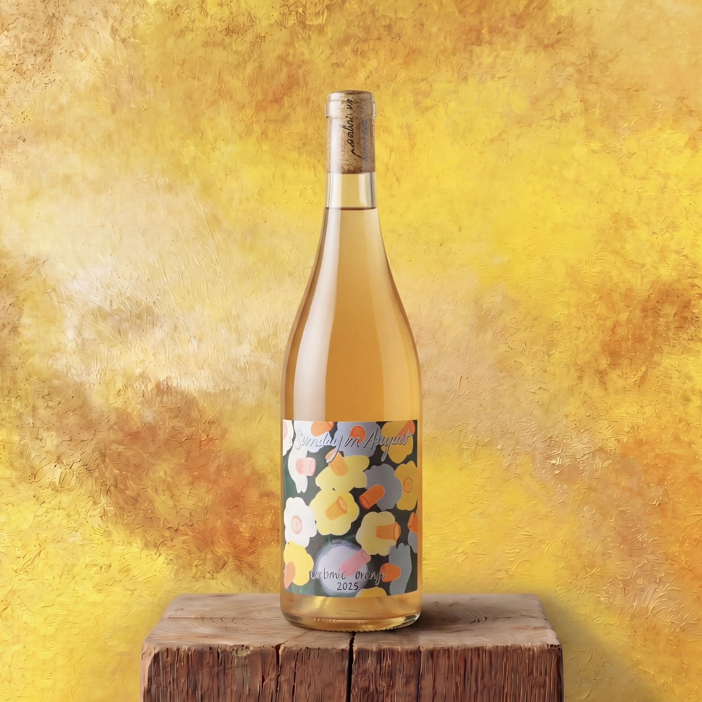

BC Wine in Kitsilano: Why We Stay Local

British Columbia has 350 wineries. Most of the grapes grow in the Okanagan Valley, a narrow strip of land running south from Kelowna toward the US border. The southern tip, around Oliver and Osoyoos, sits in the only pocket desert in Canada. Four hours from Vancouver. A different climate entirely.
The wines coming out of that region have changed significantly in the last decade. More precision. More restraint. More winemakers willing to step back and let the fruit do the work. The natural wine movement arrived here later than it did in Europe, but it arrived. Small producers. Low intervention. Short runs. A lot of them end up on our shelves because they do not end up many other places.
April is BC Wine Month. We are leaning into it. Here are two bottles that say something real about where BC wine is right now.
A Sunday in August, Carbonic Orange 2025
Okanagan Valley, BC
Mike Shindler and Sam Milbrath started making natural wine on Salt Spring Island in 2018. In 2021 they bought a 20-acre farm on the island's northeastern shore. They grow and ferment everything themselves now.
This one is a four-grape blend: Gewurztraminer, Riesling, Muscat, and Pinot Blanc. Carbonic ferment first, then five to eight days of skin maceration. Aged in stainless. Unfined, unfiltered. Wild ferment with trace sulphur and nothing else added. 600 cases made. Label art by Claire Milbrath.
Apricot on the nose. A light skin-contact grip. Bright, tart finish with the kind of pucker you would get from a good sour beer. If you drink saisons, goses, or anything in the wild ale family, this is going to connect. It paired perfectly with the Yurrita Mejillones we carry on the shelf. Mussels, tinned fish, olives, anything salty. There is genuinely nothing else out there that drinks quite like this one.
Le Vieux Pin Petit Blanc 2025
Black Sage Bench, Okanagan Valley, BC
Le Vieux Pin sits on Black Sage Road in Oliver. Sean and Saeedeh Salem founded it in 2005. The name comes from a single old-growth pine standing in the vineyard. Severine Pinte came over from France and has been the winemaker and viticulturist for years. French technique, South Okanagan fruit, low-input farming, non-interventionist winemaking.
This is mostly Sauvignon Blanc, with Chardonnay and Pinot Grigio rounding it out. Three months in stainless. Dry. 13% alcohol. 183 cases made. Crack it in the late afternoon as the sun hits the patio. Tinned fish, a salty cheese, fresh bread. Or just on its own.
Both bottles are on the shelf now. We have more BC wine in for the month, come in and we will walk you through what is worth trying.